Hong Island
全程只安排一次，避免雨季天天赌海况。
北京出发 · 2大1小1老 · 已订 Mangrovebay Krabi Beachfront Pool Villa 8/1-8/8 · 方案A：8天往返 · 方案B：+ Phuket 2晚，8/10返程 · Hertz自驾 · round-trip 机票优先。
这次不要做“每天出海打卡”的甲米，而是做低密度 Villa staycation：8/1-8/8 固定住 Mangrovebay Krabi Beachfront Pool Villa，只硬安排 Ao Nang Night Market 1次和 Hong Island 1次。若机票价差不大，建议用北京⇄Phuket往返直飞，因为 round trip 通常比 open-jaw / multi-city 更便宜，且 Phuket +2晚能让返程更从容。
全程只安排一次，避免雨季天天赌海况。

不是硬性行程，作为D7机动备选。

从Villa开车进城，建议集中一次解决夜市和补给。

Phuket重点放老街、餐厅、Kata/Karon和海景酒吧。
图片来源记录见 assets/trip-krabi/ATTRIBUTION.md；均为下载到本地的开放/可复用来源，不使用酒店/点评站版权图。
潮汐影响两件事：出海/上下船更适合中高潮，本地赶海/礁石观察更适合低潮前后。以下为公开潮汐站/搜索结果口径，Krabi以Ban Ao Nang/Ao Nang作近似，Hong Island/Ao Thalane需出发前再用船家和 Krabi Boat Lagoon tide table 复核。
| 日期 | 住宿/区域 | 潮汐口径 | 活动建议 |
|---|---|---|---|
| 8/1 | 抵达Krabi | Ao Nang：低 05:07 0.14m；高 11:25 2.11m；低 17:43 -0.03m | 抵达日不出海。傍晚低潮适合Villa周边看滩涂/红树林，但不摸不认识的生物。 |
| 8/2 | Villa | Ao Nang：高 12:07 2.10m；低 18:32 0.33m；晚高 23:53 1.69m | 傍晚低潮适合本地赶海/看小螃蟹；中午高潮不适合滩涂走太远。 |
| 8/3 | Ao Thalane | 精确表需复核；早8月通常双高潮/双低潮，时间逐日后移 | 红树林皮划艇问店家选中高潮，太低潮可能泥滩浅、划不动。 |
| 8/4 | Ao Nang夜市 | 精确表需复核；夜市与潮汐无强绑定 | 白天不安排海上活动，傍晚进Ao Nang吃饭/补给。 |
| 8/5 | Hong Island | Ao Nang：高 01:01 1.65m；低 06:51 0.34m；高 13:15 2.01m；低 19:35 0.21m | 最适合排Hong Island：中午前后高潮利于船进出与泻湖；早低潮不建议赶早船硬上。 |
| 8/6 | Klong Muang / Khaothong Hill | 精确表需复核；非出海核心日 | 出海后恢复日，潮汐只影响海滩可走范围；晚餐看天气，不看潮。 |
| 8/7 | 机动日 | 精确表需复核；若补Hong Island必须问船家 | Dragon Crest登山/温泉不受潮汐影响；若补出海，按D5逻辑等中高潮窗口。 |
| 8/8 | 转Phuket | Phuket小时潮位：00:00 2.0m，03:00 2.5m，06:00 2.6m，15:00-18:00 约1.8m | 转场日，不安排海上活动；下午到Phuket后只做Old Town/海边散步。 |
| 8/9 | Phuket | Phuket小时潮位：06:00 2.6m；18:00 1.7m；21:00 1.9m | 海滩照/玩水看天气和红旗；Old Town、餐厅和AKOYA不受潮汐影响。 |
| 8/10 | 返程 | Phuket小时潮位：06:00-09:00 约2.7m；18:00 1.8m；21:00 1.6m | 返程日不排海边活动，只去机场。 |
来源：Ao Nang 8/1、8/2、8/5公开潮汐搜索结果；Phuket 8/8-8/10公开长程潮汐结果。用于旅行规划，不用于航海导航；出海前以船家、Krabi Boat Lagoon/Thai Navy/当天海况为准。
| 方案 | 航线 | 携程/Trip.com口径 | 4人估算 | 建议 |
|---|---|---|---|---|
| A. Phuket 直飞往返 | 北京 ⇄ Phuket (HKT) 8/1-8/8 或 8/1-8/10 |
Trip.com 北京-普吉航线页显示 BJS-HKT from US$160；公开口径：国航/海航等有直飞，往返常见约 US$431-445/人。 | 约 ¥12,500-13,500 起 | 首选：直飞 + 往返票通常更便宜；缺点是D1/D8或D10要开 HKT⇄Krabi。 |
| B. Krabi 往返 | 北京 ⇄ Krabi (KBV) | Trip.com 北京-甲米航线页显示 BJS-KBV from US$193，通常需转机，无直飞。 | 约 ¥12,000-19,000 | 少开车，但转机更折腾；带老人不如Phuket直飞稳。 |
| C. Krabi进 / Phuket出 | 北京 → Krabi；Phuket → 北京 | multi-city / open-jaw 往往比标准 round trip 贵 10-30%，需在携程多程票里实时比价。 | 约 ¥14,500-22,000 | 行程最顺但不一定省钱；只有价差小于 ¥2,000-3,000/4人时才值得。 |
实操：先在携程 App 同时比价 8/1-8/8 与 8/1-8/10 的北京⇄Phuket直飞往返；再比北京⇄Krabi和多程票。若Phuket直飞往返价差不大，优先选它。
| 取还车 | 首选 Hertz Phuket Airport 取车；若飞 Krabi，则看 Hertz Thailand branches 的 Krabi Airport 柜台。 |
| 车型 | 2大1小1老 + 7-10天行李，建议 Toyota Corolla Cross / Honda HR-V / Toyota Fortuner 级别；不要小轿车硬塞行李。 |
| 证件 | 中国驾照原件 + 国际驾照翻译认证件/IDP口径提前向 Hertz Thailand 确认；泰国靠左行驶，夜间少开山路。 |
| 路程 | Phuket Airport → Mangrovebay/Khao Thong 约 160-180km，通常 2.5-3.5h；Krabi Airport → Mangrovebay 约 30-45min。 |
| 停车 | Mangrovebay 偏安静，必须有车；Ao Nang夜市、Klong Muang、Ao Thalane都靠自驾更灵活。 |
| 天 | 安排 | 住 |
|---|---|---|
| D1 8/1 | 北京 ✈ Phuket 或 Krabi；Hertz取车；抵达 Mangrovebay。当天只入住、熟悉泳池/餐厅/海边，不安排出海。 | Mangrovebay |
| D2 | Villa恢复日：泳池、海边、咖啡、午睡；下午去附近超市补水/水果。参考酒店 TripAdvisor评价：安静、自然、需要车。 | Mangrovebay |
| D3 | 红树林轻活动：上午可做 Ao Thalane kayak 或只在酒店周边看红树林；下午休息。 | Mangrovebay |
| D4 | Ao Nang 夜市日：白天Villa，16:00后开车去 Ao Nang Night Market，吃街头小吃/买补给。大众点评中文口碑入口：点评搜索 Ao Nang Night Market。 | Mangrovebay |
| D5 | Hong Island 唯一出海日：天气好才出发，选半日/小团，避免老人孩子太累；参考 Hong Islands TripAdvisor。若海况差，挪到D6/D7。 | Mangrovebay |
| D6 | 出海后恢复日：泳池 + 午睡；傍晚可去 Klong Muang Beach 看日落，或预订近Villa的 Khaothong Hill 山景晚餐。 | Mangrovebay |
| D7 | 机动日：若前面因雨取消，补 Hong Island；否则三选一：Railay/Phra Nang 半日轻游、Dragon Crest / Khao Ngon Nak 早晨登山（老人不参加）、或 Emerald Pool + Klong Thom Hot Spring 温泉日。 | Mangrovebay |
| D8 8/8 | 退房；若Phuket往返票，早起开回HKT还车返京；若Krabi往返票，KBV还车返京。不要当天再安排景点。 | — |
如果北京⇄Phuket直飞往返票价合适，建议加2晚Phuket：一是返程不赶，二是顺便体验更成熟商业海岛，与安静的Mangrovebay形成对比。
| 天 | 安排 | 住 |
|---|---|---|
| D1-D7 8/1-8/7 | 同方案A，Mangrovebay连住，保留 Ao Nang Night Market 1次 + Hong Island 1次。 | Mangrovebay |
| D8 8/8 | 退房，开车去 Phuket（约2.5-3.5h）；入住 Old Town 或 Kata/Karon。酒店查 Booking Phuket。下午只做酒店/海边恢复。 | Phuket |
| D9 8/9 | Phuket差异体验：上午 Old Phuket Town，午餐 Tu Kab Khao 或 Blue Elephant；下午 Kata/Karon beach 或回酒店休息；傍晚如想山顶/海景酒吧，选 AKOYA Star Lounge，比 Baba Nest 更适合家庭。 | Phuket |
| D10 8/10 | Phuket Airport 还Hertz车，直飞/转机返北京。返程查 Trip.com Phuket-Beijing；上午只安排早餐和机场。 | — |
把“玩”和“活动”统一成点评卡：每个活动都有本地图片、评分口径、适合哪天去、以及 TripAdvisor / 大众点评入口。雨季出海、皮划艇、礁石和赶海都要以当天风浪、船家和潮汐复核为准。
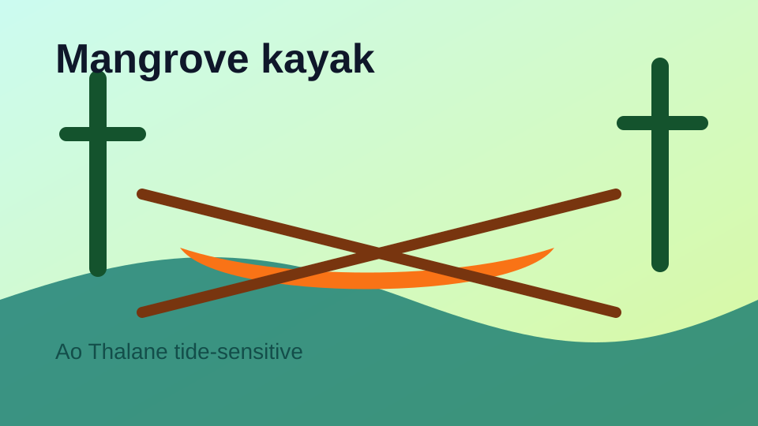
离 Mangrovebay 区域近，适合恢复日轻活动；低潮会泥滩浅，预订时让店家按中高潮安排。
全程只硬排一次出海，天气好才出发；老人孩子建议半日或小团，不要把每天都压在海况上。
只安排一次，顺路解决夜市、饮料、水果、超市补给；避免每天从Villa长距离开车进城。
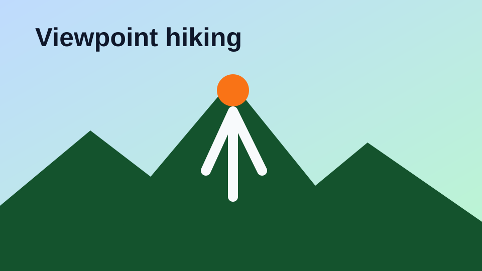
湿滑台阶和林道较多，雨后不建议；适合体力好的大人清晨挑战，其他人留Villa泳池休息。
视野好但强度大，雨后和正午都不建议；如果安排，只给体力好的成人，孩子老人不硬上。
短程木栈道，可通往 Pai Plong Beach；不要拿食物逗猴，雨后木板可能滑。
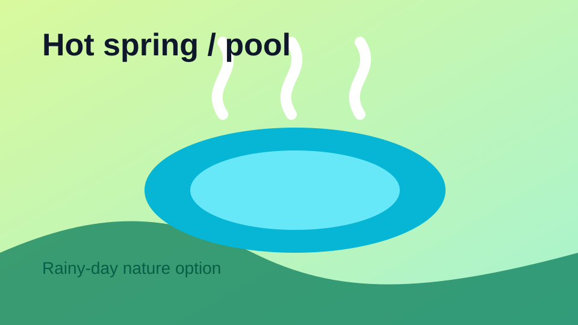
适合不出海的雨后/阴天自然日；池边滑，孩子要看紧，老人按体力选择走多少。
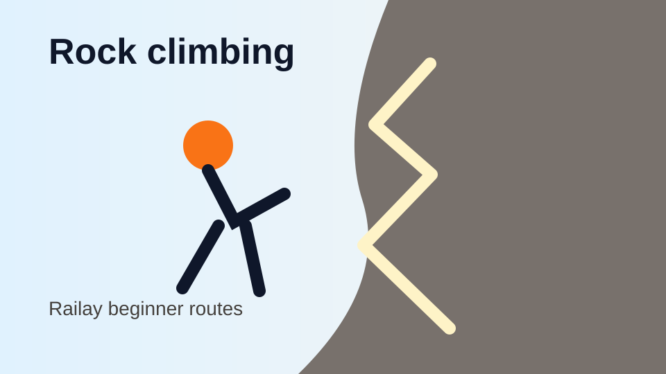
攀岩首选区域，初学课程成熟；老人可以在海滩/咖啡等候，不需要参与攀爬。
和安静的 Mangrovebay 形成反差；适合 +2晚方案中做半天城市体验，不需要再安排 Big Buddha。
所有餐厅改成统一点评卡：图片为本地主题图或已下载目的地图，不热链；评分以 TripAdvisor/公开点评口径整理为 ⭐，到店前仍需复核当天营业、预约和雨季交通。
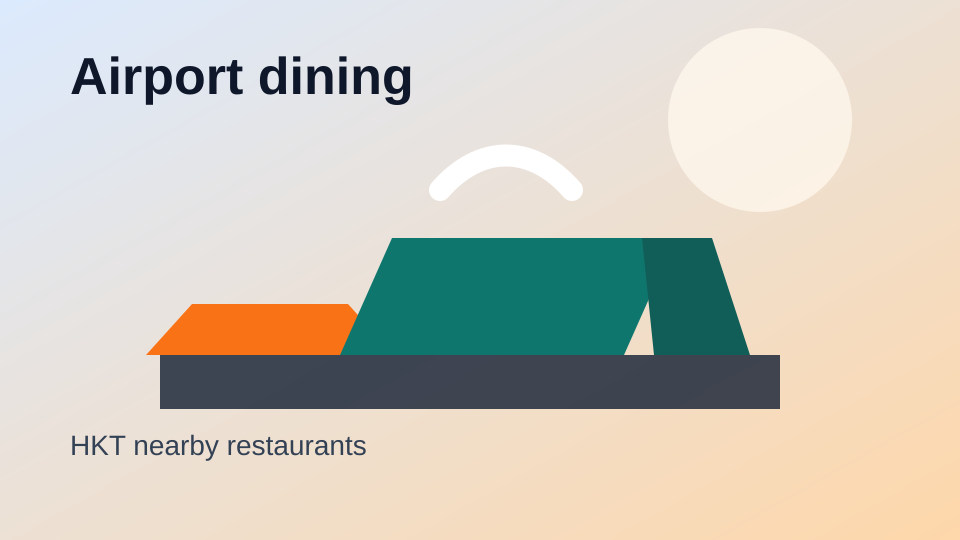
早到或返程前比机场内快餐更舒服，适合咖啡、简餐和等机。
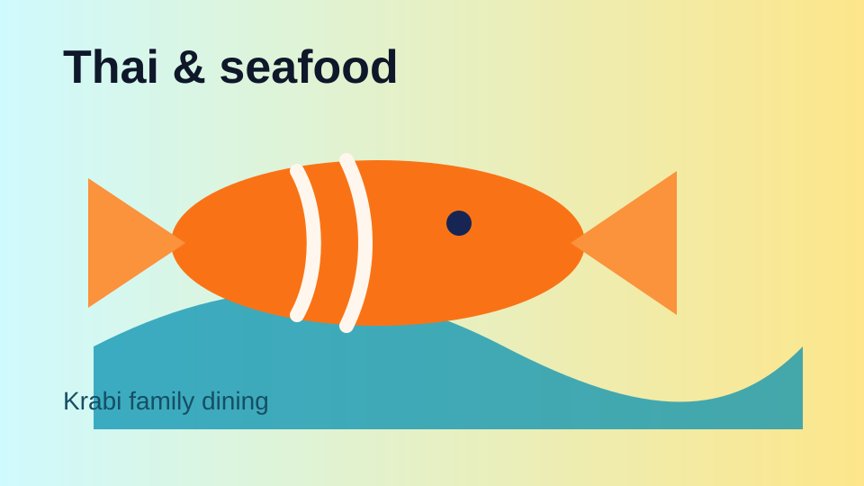
机场附近正餐更稳的选择，适合返程前吃海鲜/泰餐。
Pad Thai、脆皮猪等本地快餐型正餐，适合不想在机场吃。
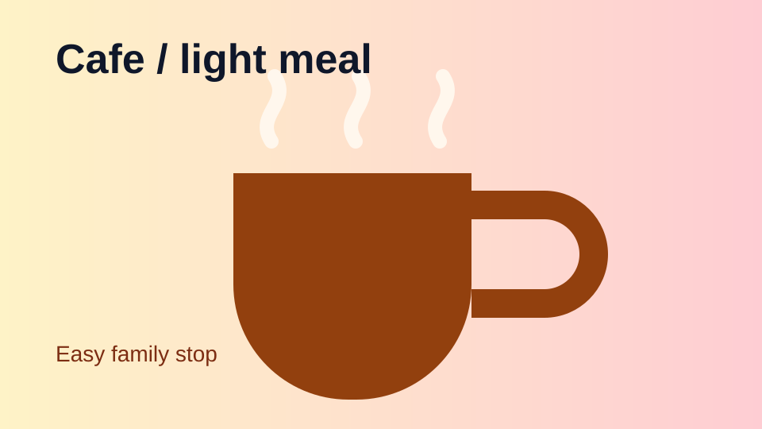
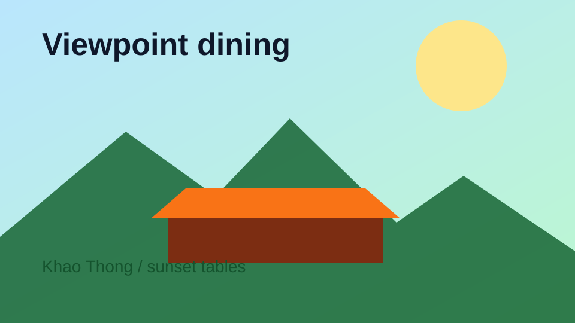
Villa近，景观强，D2/D6日落晚餐优先；尽量提前订靠景观位。
海景、瀑布环境和泰式海鲜，适合 Villa 周边正式午餐或晚餐。
评价量少但分高，胜在离Villa区域近和视野好；路偏，天黑前返程。
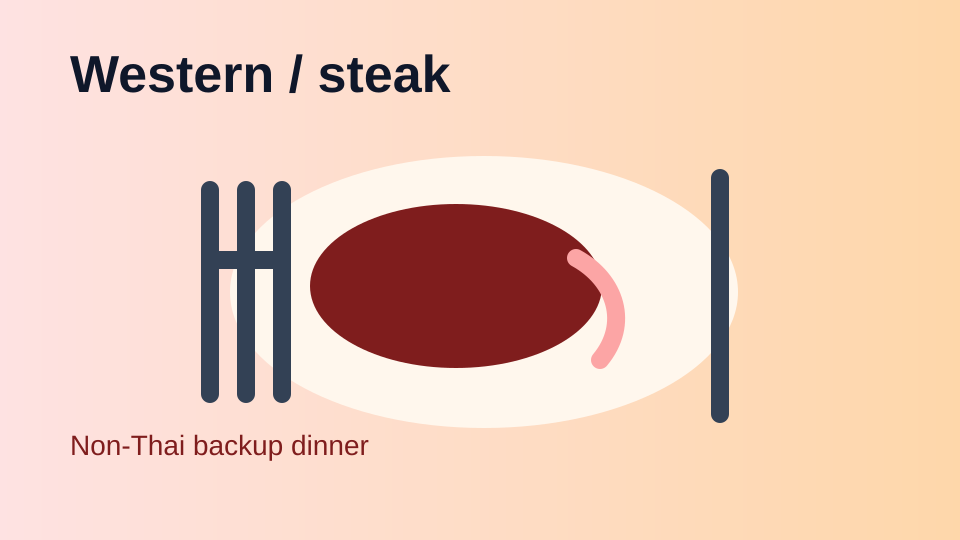
想换西餐口味时用，不作为主力餐厅；出发前看当天营业。
日落视野和氛围型备选，适合不想进 Ao Nang 的晚上。
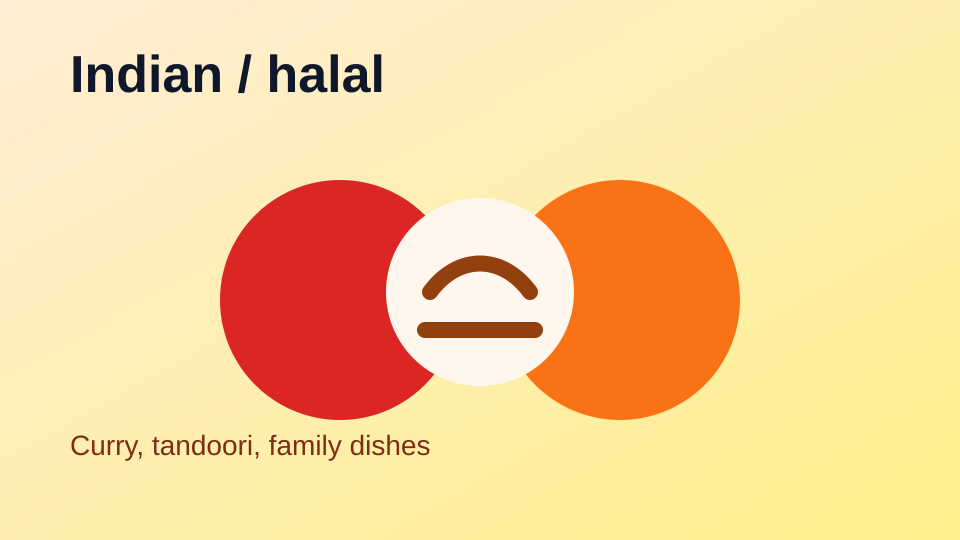
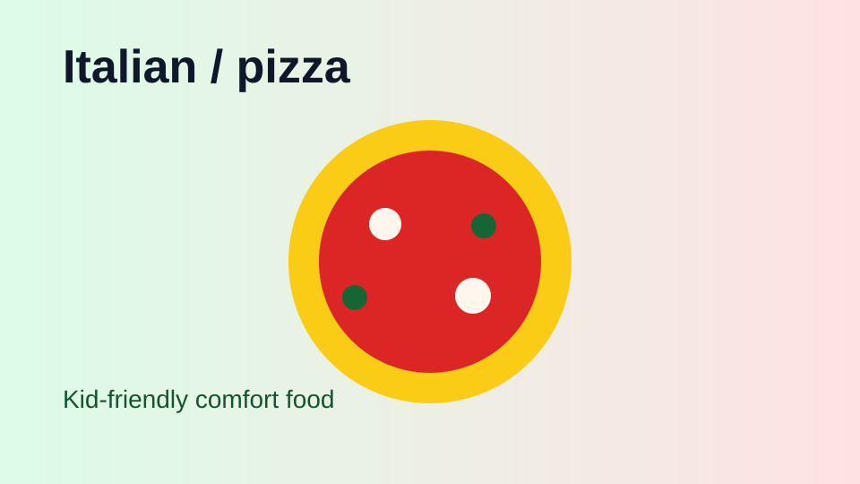
想一次吃海鲜时考虑；自助更看当天品质，到店前复核新近评价。
看日落和轻食氛围型备选，雨季只在天气好时安排。
D9老城午餐优先，体验和Krabi Villa完全不同的城市餐厅。
预算更高但环境稳定，适合想把Phuket收尾做得更正式。
比 Baba Nest 更容易带家庭落地，适合D9日落时段；务必提前订位。
说明：餐厅真实商家照片多受版权限制，因此页面使用本地主题图片/已下载目的地图做视觉卡片，不热链 TripAdvisor/大众点评/酒店图；每张卡都保留可点击参考入口，出发前按最新评价和营业时间复核。
| 项目 | 8天版 | + Phuket 10天版 | 备注 |
|---|---|---|---|
| 机票 | ¥12,000-18,000 | ¥12,500-20,000 | Phuket直飞往返优先；round trip 通常更便宜。 |
| 酒店 | 已订 Mangrovebay 7晚 | 已订 Mangrovebay 7晚 + Phuket 2晚 ¥3,000-8,000 | Phuket住Old Town/Kata/Karon，按可取消优先。 |
| Hertz租车 | ¥4,500-7,000 | ¥5,500-8,500 | 含基础租金估算，不含押金/保险升级/异地还车差价。 |
| 活动 | ¥2,000-4,000 | ¥3,000-5,500 | Hong Island 1次为主；Phuket加Old Town、Kata/Karon、AKOYA等低/中成本体验。 |
| 餐饮/油费/杂费 | ¥8,000-11,000 | ¥10,000-14,000 | Villa餐厅+夜市+Phuket餐厅。 |